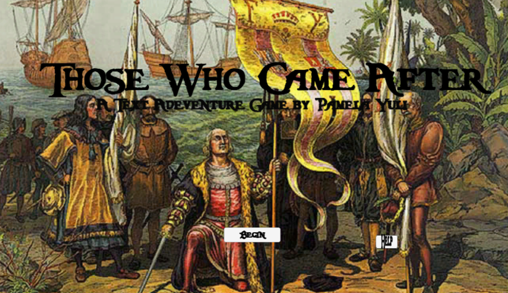
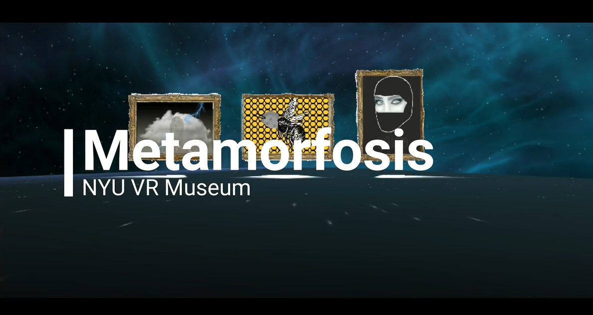

Recent Projects
Those Who Came After
MAY 2019
Project Duration: 3 Weeks
Keywords: Text-adventure, History, Game

Live Preview
Source
This app is based on the popular text adventure games made popular in the early 80's. You play as a native of the island of Hispanola looking to escape your enslavement.
Technologies Used:
- Unity 2D
- C#
- Visual Studio Code
- PhotoShop
- HTML5
- CSS3
- Audacity
My Role
In this project I oversaw all aspects of development. My intial interest in the topic came from a course I was taking my senior year at New York University, which focused on literature based in the Carribean.
Project Difficulties
After researching the ways in which I could develop a text-adventure game using Unity, I realized the amount of items I would ultimately need to implement was a lot more than I had anticipated. I was essentially working with over a hundred items and no way to really organize them.
My Solution
Through some in depth organization, I was able to develop a chart with all items as well as prompts that would lead to: obtaining the items, directional cues, and blocked passages that would prevent the player from progressing. The process became much quicker and simpler, and allowed me to focus most of my time on the story.
Notable Features
The simplicity of this app is definitely something that reminds me of the classic text-adventure games I would play growing up. Despite there being no images, I believe the audio cues and plot help bring this story to life.
Metamorfosis
MAY 2019
Project Duration: 1 Month
Keywords: VR, Womanhood, Art

Live Preview
Source
This app was developed for a New York University course which focused on Digital Media. For this project I developed the idea for a VR art piece, with a focus on aspects of woman hood.
Technologies Used:
- Unity 3D
- C#
- Visual Studio Code
- PhotoShop
- HTML5
- CSS3
- Audacity
My Role
In this project I oversaw all aspects of development. Being that I am also an artist, I decided to create original digital srt pieces on topics in today's world. The three topics I focused on were 1) The Emotional Being 2)Queen Bee Leading, Whose to Follow and 3) Accepting the Unknown
Project Difficulties
Creating the actual VR space was by far the most difficult. This was my first attempt at using Unity's 3D engine, so I had to learn how to navigate the actual interface. Once I was able to successfully program the engines cameras, I was more easily able to develop the space to fit my needs.
My Solution
My prior experience with Unity's 2D engine aided me in understanding the basic functionalities of several 3D elements. I was able to adapt my knowledge of Unity's 2D camera to create a 3D camera that captured the space in a way that focused primarily on the art.
Notable Features
The atmospheric music in the background is something I added at the very end and is something I believe really pulled the experience together. The moving art pieces add movement to the messages I wanted to come across.